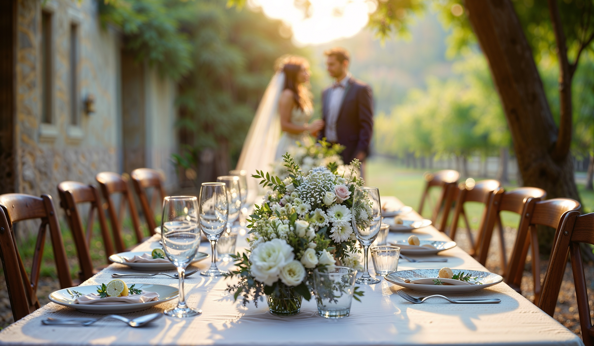

Un mariage de prestige à Megève ne ressemble à aucun autre événement. Des invités arrivent de Paris, de Genève, de Londres ou de Dubaï. Certains logent au Mont-Blanc Resort, d'autres au Chalet du Mont d'Arbois, d'autres encore dans des propriétés privées dispersées sur les hauteurs du village. La cérémonie se tient dans un domaine isolé accessible par une route étroite. Le dîner de gala commence à 20h précises. Et la météo des Alpes, elle, ne prévient pas.
Dans ce contexte, le transport des invités n'est pas une question logistique secondaire. C'est souvent l'un des paramètres les plus fragiles de toute l'organisation — et le plus susceptible de compromettre une expérience construite pendant des mois.
Ce guide a été conçu pour les wedding planners et les agences événementielles de luxe qui intègrent les Alpes françaises dans leur portefeuille de destinations. Il est écrit pour des professionnels — pas pour les couples. Parce que ce sont les professionnels qui prennent les décisions logistiques qui déterminent si un événement tient ses promesses.
Pourquoi le transport est souvent sous-estimé dans un mariage de prestige
Il est tentant de traiter le transport comme une prestation annexe, à régler en dernier. C'est une erreur que font même des professionnels expérimentés.
Dans un mariage de luxe, chaque déplacement est une interaction avec la marque du mariage. L'invité qui attend vingt minutes au sortir d'un vol depuis Genève, l'invitée en robe longue qui monte dans un taxi ordinaire, le père des mariés qui arrive en retard à la cérémonie parce que la navette n'a pas été prévue — ces moments ne s'oublient pas. Ils définissent la tonalité de tout l'événement.
Ce qui complique la situation à Megève, c'est la multiplication des flux :
- Des dizaines d'invités arrivant à des horaires différents, sur plusieurs aéroports et gares
- Plusieurs lieux enchaînés sur une même journée
- Des hébergements dispersés (hôtels 5 étoiles, chalets de luxe, résidences privées)
- Des contraintes horaires millimétrées — notamment pour la cérémonie laïque et le dîner de gala
- Des invités VIP qui n'ont aucune connaissance du terrain et ne peuvent pas se débrouiller seuls
Le transport n'est pas la dernière chose à régler. C'est la première chose à sécuriser — parce que tout le reste en dépend.
La coordination de l'ensemble exige une expertise spécifique. Ce n'est pas une question de bonne volonté — c'est une question de métier.
Les défis spécifiques d'un mariage de luxe à Megève
Megève est l'une des stations de montagne les plus prisées d'Europe pour les mariages de prestige. Mais organiser la logistique de transport dans ce cadre impose des contraintes que l'on ne rencontre nulle part ailleurs.
Des routes de montagne qui ne pardonnent pas
Les accès à Megève depuis Sallanches, Cluses ou Annecy peuvent être saturés en haute saison. Certains domaines privés, certains chalets de luxe et certains lieux de réception sont accessibles uniquement par des routes étroites ou en lacets. La durée d'un trajet peut doubler en cas de circulation. Sans coordinateur terrain et sans marge de sécurité, les retards sont inévitables.
La météo alpine, imprévisible par définition
Un mariage d'été à Megève peut être suivi d'un orage soudain. Un mariage d'hiver peut voir les conditions de circulation se dégrader en quelques heures. Un prestataire transport expérimenté anticipe ces scénarios avec des solutions de repli : itinéraires alternatifs, véhicules 4×4 disponibles, coordination en temps réel avec les équipes locales.
Des hébergements dispersés et prestigieux
Le Chalet du Mont d'Arbois, l'Alpaga, le Lodge Park, le Mont-Blanc Resort — chacun de ces établissements est situé à des distances variables du centre, des lieux de cérémonie et des espaces de réception. Un plan de navettes bien conçu peut nécessiter quatre à six rotations simultanées pour un seul transfert collectif.
La circulation saisonnière
En été comme en hiver, Megève reçoit un afflux important de visiteurs. Le village lui-même n'est pas conçu pour de grands flux de circulation. Un prestataire local qui connaît les horaires de pointe et les accès alternatifs est un avantage décisif.
Tous les transferts à planifier pendant un wedding weekend à Megève
Un mariage de luxe à Megève se déroule rarement sur une seule journée. Le schéma classique couvre trois jours. Voici la cartographie complète des déplacements à anticiper.
Jour 1 — Les arrivées et le dîner de bienvenue
Les arrivées depuis les aéroports et les gares sont les transferts les plus techniques. Les principaux points d'entrée sont :
- Aéroport de Genève-Cointrin (~1h15–1h30) — la majorité des invités internationaux
- Aéroport de Lyon-Saint-Exupéry (~2h) — invités venant du Sud et de l'international
- Aéroport de Chambéry (~1h30) — vols régionaux et charters privés
- Gare de Sallanches (~20 min) — TGV depuis Paris, Marseille, Lyon
- Gare d'Annecy (~1h) — alternative selon les disponibilités ferroviaires
Chaque flux doit être suivi individuellement. Un coordinateur dédié surveille les numéros de vol et de train en temps réel, adapte les horaires de prise en charge en cas de retard, et garantit qu'aucun invité ne se retrouve seul sur un quai ou dans un hall d'arrivée.
Ces navettes mariage privées à Megève se distinguent fondamentalement des navettes collectives publiques (Meg-Bus, Altibus) : les véhicules sont réservés à l'exclusivité de l'événement, les horaires sont calés sur le programme du mariage, et le service inclut une prise en charge nominative avec gestion des bagages. Pour les invités internationaux, c'est souvent le premier contact avec l'ambiance du mariage — il doit être irréprochable.

Transferts VIP depuis Genève, Lyon & Chambéry · coordination en temps réel · navettes mariage privées Megève
Jour 2 — Le jour J
C'est la journée la plus dense. Les transferts s'enchaînent sur douze à seize heures. Le transfert vers la cérémonie est le plus sensible : l'horaire est non négociable, la pression est maximale et le moindre retard se voit.
Jour 3 — Le brunch et les départs
Le brunch du lendemain demande un transfert aller-retour, puis les premiers départs vers les aéroports et les gares. C'est la dernière impression que les invités emportent du weekend — elle mérite autant d'attention que le jour J.
Dites-nous le programme de votre client.
On vous dit si le plan tient.
Lieux, hébergements, nombre d'invités, dates — partagez les grandes lignes et recevez une analyse de faisabilité transport sur mesure. Gratuit. Sans engagement.
Soumettre mon programme →La coordination complète d'un wedding weekend de prestige —
cliquez sur chaque journée pour voir le détail
-
10h – 20h
11 transferts aéroport Genève — suivi en temps réel des vols, panneau nominatif, gestion des bagages, accueil personnalisé.
-
14h – 20h
4 transferts gare de Sallanches — TGV depuis Paris, coordination avec la SNCF pour les retards.
-
19h30
Rotation collective hébergements → dîner de bienvenue — 3 hôtels, 2 rotations, 120 invités acheminés en 45 minutes.
-
23h30
Retours depuis le dîner — rotations continues vers les 3 hébergements selon les départs des invités.
- 3 Mercedes Classe V (8 places) pour les transferts collectifs
- 2 Mercedes Classe S pour les arrivées VIP individuelles
- 1 coordinateur terrain disponible 24h/24
-
14h15 · Départ garanti
Hébergements → Cérémonie laïque — arrivée garantie 15h00. Timing non négociable. 3 rotations simultanées depuis les 3 hôtels.
-
Immédiatement après
Cérémonie → Espace cocktail — rotation rapide, flotte repositionnée pendant la cérémonie.
-
19h30
Cocktail → Salle de réception — 120 personnes en 3 rotations, durée totale 35 minutes.
-
00h – 02h30
Retours continus — rotations étalées selon les départs des invités, vers les 3 hébergements. Véhicules disponibles à la demande.
- Zéro retard sur la cérémonie
- 120 invités acheminés sans attente perceptible
- Aucun appel logistique transmis au wedding planner pendant la cérémonie
-
11h00
Rotation collective → Brunch — départ depuis les 3 hôtels, ponctualité maintenue malgré la fatigue de la nuit.
-
13h – 18h
Transferts départs aéroports & gares — organisés selon les vols et trains de chacun, anticipés avec une marge de 30 minutes.
- Les départs du Jour 3 sont souvent sous-traités à des taxis de fortune — c'est la dernière impression que les invités emportent. Elle mérite la même attention que le reste.
- Flotte optimisée : les véhicules font des allers-retours groupés pour éviter les temps d'attente.
Résultat : zéro attente, zéro retard sur la cérémonie. 120 invités avec l'impression que tout coulait naturellement de source — sans qu'un seul d'entre eux n'ait eu à se préoccuper de logistique pendant l'ensemble du weekend.
120 invités. Zéro retard. Zéro appel logistique le jour J.
C'est exactement ce qu'on construit ensemble.
Partagez les grandes lignes de votre prochain mariage à Megève ou dans les Alpes — et recevez une proposition de coordination transport clé en main, dimensionnée précisément pour votre programme.
Obtenir ma proposition →Pourquoi les wedding planners délèguent la logistique transport
Les professionnels de l'événementiel de luxe qui organisent régulièrement des mariages à Megève, à Courchevel ou à Chamonix ont tous adopté la même pratique : ils externalisent entièrement la coordination transport à un prestataire spécialisé.
Un seul interlocuteur. Plutôt que de coordonner cinq sociétés différentes, le wedding planner travaille avec un coordinateur unique qui gère l'ensemble de la flotte et communique directement avec les équipes sur le terrain.
La gestion des imprévus en temps réel. Retard de vol, invité qui change d'hôtel au dernier moment, route fermée — un prestataire expérimenté a des solutions de repli préparées. Il ne signale pas un problème ; il le résout avant même que le wedding planner en soit informé.
La réduction du stress le jour J. La logistique transport peut représenter des dizaines d'appels téléphoniques pendant la cérémonie. La déléguer libère le wedding planner pour se concentrer sur ce qu'il fait de mieux : orchestrer l'expérience, pas gérer des rotations de navettes.
La sécurité juridique et opérationnelle. Un prestataire professionnel est assuré, ses coordinateurs sont formés, ses véhicules sont vérifiés. En cas d'incident, la responsabilité est clairement établie.
Un invité bien pris en charge dès son arrivée à l'aéroport de Genève perçoit immédiatement le niveau de soin que les mariés ont mis dans chaque détail.
Ce qu'attendent vraiment les invités haut de gamme
Les invités d'un mariage de prestige ont des attentes précises, souvent non formulées mais immédiatement ressenties.
La ponctualité avant tout. Un invité VIP n'attend pas. Le véhicule est là avant l'heure convenue.
Des véhicules impeccables. Une Mercedes Classe V ou une Mercedes Classe S intérieure parfaitement entretenue, odeur neutre, climatisation silencieuse, vitres teintées. Pas un véhicule de flotte banalisée.
Des coordinateurs à la hauteur. En costume, discrets, aimables sans familiarité. Ils connaissent le lieu de destination, ils n'ont pas besoin de GPS visible sur le tableau de bord. Ils aident à monter les bagages sans qu'on le leur demande.
Les détails qui font la différence. Eau minérale fraîche, chargeurs universels disponibles, musique d'ambiance adaptée ou silence selon la préférence. Ces petits détails constituent l'expérience de conciergerie que les invités haut de gamme associent naturellement à un service d'excellence.
La discrétion absolue. Un invité célèbre, un chef d'entreprise, une personnalité publique — ils n'ont pas à demander la confidentialité. Elle est garantie par défaut, sans mention.


Les erreurs les plus fréquentes dans l'organisation du transport
Même les professionnels les plus rigoureux tombent parfois dans ces pièges. Les connaître, c'est déjà les éviter.
- Réserver trop tard. À Megève en haute saison (juillet, août, décembre, janvier), les prestataires de qualité sont réservés des mois à l'avance. Attendre d'avoir confirmé tous les autres prestataires pour s'occuper du transport, c'est souvent arriver trop tard.
- Oublier certains flux. Les retours de fin de soirée, les départs du lendemain, les transferts pour les cérémonies civiles — certains mouvements sont oubliés dans la planification initiale et créent des situations de crise le jour J.
- Sous-estimer les temps de trajet. Genève–Megève peut prendre 1h15 en conditions normales et 2h en période de trafic. Ne pas intégrer de marge de sécurité est une erreur classique aux conséquences visibles.
- Travailler sans coordinateur terrain. Avoir des coordinateurs sans chef de flotte central qui gère tout en temps réel, c'est multiplier les risques de désorganisation au moment où elle est la moins acceptable.
- Mal dimensionner la flotte. Sous-estimer le nombre de rotations nécessaires entraîne des attentes. Le bon calibrage s'obtient avec de l'expérience sur ce type d'événement.
- Absence de plan B. Que se passe-t-il si un véhicule est indisponible ? Si une route est fermée ? Un prestataire sérieux a toujours des solutions de remplacement identifiées avant l'événement.
- Manque de communication avec les invités. Les invités doivent recevoir, avant le weekend, une fiche pratique claire : heure de prise en charge, lieu exact de rendez-vous, prénom du coordinateur, numéro de contact.
Comment choisir le bon prestataire transport pour un mariage
La checklist du wedding planner
Avant de valider un prestataire transport pour un mariage de luxe à Megève, posez-vous les questions suivantes :
- ✓ Le prestataire a-t-il déjà géré des wedding weekends de plusieurs jours ? Peut-il citer des références concrètes dans le secteur du mariage de luxe ?
- ✓ Les véhicules sont-ils récents, en parfait état, adaptés au confort d'invités VIP (van premium, berline de prestige) ?
- ✓ Assure-t-il la coordination terrain, ou se contente-t-il de fournir des coordinateurs sans pilote central ?
- ✓ Comment gère-t-il un retard de vol à 23h ? Peut-il ajouter un véhicule en dernière minute ?
- ✓ Le prestataire est-il couvert par une assurance passagers et responsabilité civile événementielle ?
- ✓ Connaît-il les accès spécifiques à Megève : domaines privés, routes alternatives, protocoles des grands hôtels ?
- ✓ Sera-t-il joignable en permanence le weekend du mariage, à toute heure ?
- ✓ Les coordinateurs sont-ils formés aux codes du luxe : tenue, communication, discrétion, accueil ?
- ✓ A-t-il la capacité de gérer un événement sur 3 jours avec plusieurs hôtels simultanément ?
Votre prestataire actuel passerait-il la checklist à 9 critères ?
Notre équipe passe votre programme en revue — points d'entrée, coordination terrain, dimensionnement de flotte — et vous dit précisément ce qui tient et ce qui mérite d'être renforcé. Réponse sous 24h.
Demander l'audit →Combien de véhicules pour le mariage de votre client ?
Réservation recommandée : 6 mois à l'avance en haute saison (juillet–août, décembre–janvier)
Estimation indicative. La configuration exacte dépend de vos lieux, hébergements et programme.
Pourquoi Megève exige une organisation spécifique
Megève n'est pas simplement une montagne. C'est un écosystème d'événements privés de très haut standing, avec une culture de l'excellence qui remonte aux origines de la station. Les prestataires qui interviennent sur des mariages à Megève doivent maîtriser les codes du luxe alpin autant que la logistique opérationnelle.
Les domaines privés qui accueillent les réceptions sont souvent inaccessibles sans coordination préalable avec leurs équipes de sécurité. Certains chalets ont des limitations de gabarit pour les véhicules. Les hôtels 5 étoiles du village ont leurs propres protocoles d'accueil des prestataires.
À cela s'ajoutent la saisonnalité — deux hautes saisons distinctes (été et hiver) avec des contraintes radicalement différentes — et une demande en transport événementiel de luxe qui dépasse souvent l'offre disponible. Anticiper est une nécessité, pas une option. Découvrez l'ensemble de nos services sur la page Megève — Luxury Ground Logistics.
Il en va de même pour les stations voisines : Courchevel, Chamonix, Val d'Isère — chaque territoire alpin a ses propres contraintes d'accès, et seul un prestataire qui les connaît intimement peut garantir la ponctualité et la qualité de service attendues lors d'un mariage de prestige.
Les conseils des wedding planners expérimentés
Les professionnels qui organisent régulièrement des mariages de prestige dans les Alpes partagent des recommandations constantes. En voici les plus précieuses.
- Réservez le transport en même temps que les lieux de réception. Pas après, pas "quand tout sera calé". En même temps. À Megève en haute saison, les bons prestataires sont pris d'assaut.
- Intégrez le coordinateur transport dans votre groupe de communication. Il doit recevoir toutes les mises à jour en temps réel : changement d'horaire, invité supplémentaire, modification de lieu.
- Préparez une fiche logistique claire pour chaque invité. Heure de prise en charge, lieu exact de rendez-vous, numéro du coordinateur. Envoyée 5 à 7 jours avant l'événement.
- Anticipez les invités à mobilité réduite. Leurs besoins spécifiques doivent être intégrés dès la planification — pas le jour J.
- Prévoyez une marge de 20 minutes sur chaque transfert critique. Sur une route de montagne, un incident mineur peut faire perdre dix minutes. Cette marge est invisible quand tout va bien, et précieuse quand ça coince.
- Briefez les coordinateurs sur les personnes-clés. Un coordinateur qui connaît le prénom des mariés, le nom de la mère de la mariée, les invités qui ont des besoins spécifiques — ce niveau d'attention se prépare, et il se voit.
Questions fréquentes sur le transport de mariage à Megève
L'organisation repose sur trois piliers : un état des lieux précis de tous les flux (arrivées, déplacements du jour J, départs), une flotte dimensionnée en conséquence, et un coordinateur terrain disponible pendant toute la durée du weekend. Plus le mariage dure longtemps et plus les invités sont nombreux, plus la coordination devient technique — et plus la délégation à un prestataire spécialisé devient indispensable.
Pour un mariage de 80 à 150 invités sur 3 jours avec des transferts aéroport inclus, le transport représente en général 5 à 8 % du budget global d'un mariage de prestige. C'est une part disproportionnellement petite au regard de son impact sur l'expérience des invités — et sur la réputation du wedding planner.
Au minimum 6 mois à l'avance en haute saison (juillet, août, décembre, janvier). Pour les weekends de juillet et août, certains prestataires de qualité sont complets dès 8 à 10 mois avant la date. La règle d'or : réservez le transport en même temps que vous réservez les lieux de réception.
Pour 100 invités à transporter simultanément en un seul transfert, il faut typiquement 10 à 14 véhicules de 8 places, ou une combinaison de vans premium et de berlines selon la segmentation des invités (VIP en berline individuelle, groupes en van). Ce chiffre varie selon le nombre de rotations possibles et la distance entre les points.
L'aéroport de Genève est le principal point d'entrée pour les invités internationaux. Le trajet dure environ 1h15 à 1h30 selon la circulation. Les coordinateurs attendent dans l'espace arrivées avec un panneau nominatif, gèrent les bagages et proposent un accueil personnalisé. Les numéros de vol sont suivis en temps réel pour adapter les horaires en cas de retard.
Oui, systématiquement. Les fins de réception sont rarement synchrones : certains invités partent à minuit, d'autres à 2h ou 3h du matin. Un système de rotations sur plusieurs créneaux, avec des véhicules disponibles à la demande toute la nuit, est la solution la plus fluide et la plus confortable pour les invités.
Idéalement, un prestataire spécialisé en logistique événementielle de luxe, doté d'un coordinateur terrain dédié à l'événement. Le wedding planner pilote la coordination globale ; le prestataire transport gère l'exécution opérationnelle de façon autonome, en communiquant en temps réel sur tout changement.
Un prestataire expérimenté dispose de véhicules adaptés aux conditions alpines (pneus neige, chaînes disponibles en hiver), d'itinéraires alternatifs préparés en avance, et d'une communication directe avec les équipes locales pour anticiper les fermetures de route ou les conditions difficiles.
Les coordinateurs professionnels parlent a minima anglais courant. Pour des événements accueillant des nationalités diverses (invités britanniques, américains, italiens, arabes…), il est possible de prévoir des coordinateurs multilingues et des fiches de transport en plusieurs langues envoyées en avance.
Oui. Il est possible d'intégrer les couleurs du mariage dans les supports d'accueil, de prévoir une playlist spécifique dans les véhicules, d'ajouter un mot des mariés glissé dans l'habitacle ou des attentions personnalisées selon le profil de l'invité. Ces détails participent à la cohérence de l'expérience de bout en bout.
Oui. B.LIFTED France intervient sur l'ensemble des Alpes françaises : Megève, Courchevel, Chamonix, Val d'Isère, Méribel, Les Gets et les stations environnantes. La connaissance des routes alpines, des domaines privés et des contraintes saisonnières est commune à toutes ces destinations.
En planifiant les rotations par ordre de priorité et en définissant des points de rendez-vous précis pour chaque hébergement. Pour 3 hôtels, on prévoit généralement 3 véhicules en rotation simultanée lors des transferts collectifs, avec un coordinateur qui pilote l'ensemble depuis un point central.
Pour tout mariage de plus de 60 invités sur plusieurs jours, oui sans hésitation. Le wedding planner a suffisamment à gérer le jour J pour ne pas piloter en parallèle les rotations de navettes et les retards de vol. Un coordinateur terrain dédié au transport permet à chacun de rester concentré sur son domaine d'expertise.
Un service à la demande répond à une demande ponctuelle et ne s'intègre pas dans un plan logistique global. Un service de logistique dédié pour un événement de prestige implique une intégration complète au programme du mariage, une coordination terrain, des véhicules premium réservés à l'exclusivité de l'événement, et une disponibilité totale pendant toute la durée du weekend.
Conclusion : le transport, dernier kilomètre de l'expérience invité
Un mariage de luxe à Megève est une construction totale. Chaque élément — le lieu, la décoration, le traiteur, la musique, les fleurs — contribue à une émotion que les invités emporteront pour des années. Le transport n'y échappe pas.
C'est le premier contact avec l'événement (à l'aéroport, à la gare) et le dernier souvenir (le retour à l'hôtel en fin de nuit). Entre les deux, c'est la colonne vertébrale invisible qui permet à tout le reste de fonctionner à l'heure, sans couture, sans stress visible.
Les wedding planners et les agences événementielles qui comprennent cela ne traitent plus le transport comme une prestation secondaire. Ils le planifient aussi soigneusement que le lieu ou le traiteur — et ils choisissent leurs prestataires avec le même niveau d'exigence.
Ce que signifie "partenaire logistique" pour un wedding planner
Il y a une différence entre un prestataire et un partenaire. Un prestataire exécute. Un partenaire anticipe, s'adapte, protège — et construit dans la durée.
Les wedding planners qui intègrent B.LIFTED dans leur carnet de prestataires de référence ne le font pas pour un événement. Ils le font parce qu'ils ont besoin d'un interlocuteur sur qui compter à chaque mariage, dans chaque territoire alpin — avec la même exigence, la même discrétion, la même fiabilité, quel que soit le volume ou la complexité de l'événement.
Ce que nous leur offrons en retour :
- Un contact dédié qui connaît leur façon de travailler et anticipe leurs besoins sans qu'ils aient à tout réexpliquer
- Une priorité de disponibilité sur les dates de haute saison — parce que les partenaires passent avant les demandes entrantes
- Une totale discrétion vis-à-vis de leurs clients : B.LIFTED ne démarchera jamais directement les couples qu'un partenaire nous a confiés
- Des comptes-rendus opérationnels après chaque événement — ce qui a été exécuté, les imprévus gérés, les recommandations pour la prochaine fois
Un partenariat, ça se construit sur la confiance accumulée. Commençons par un premier échange.